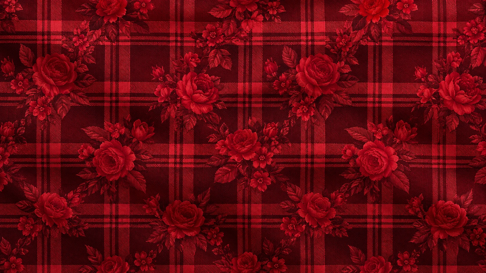
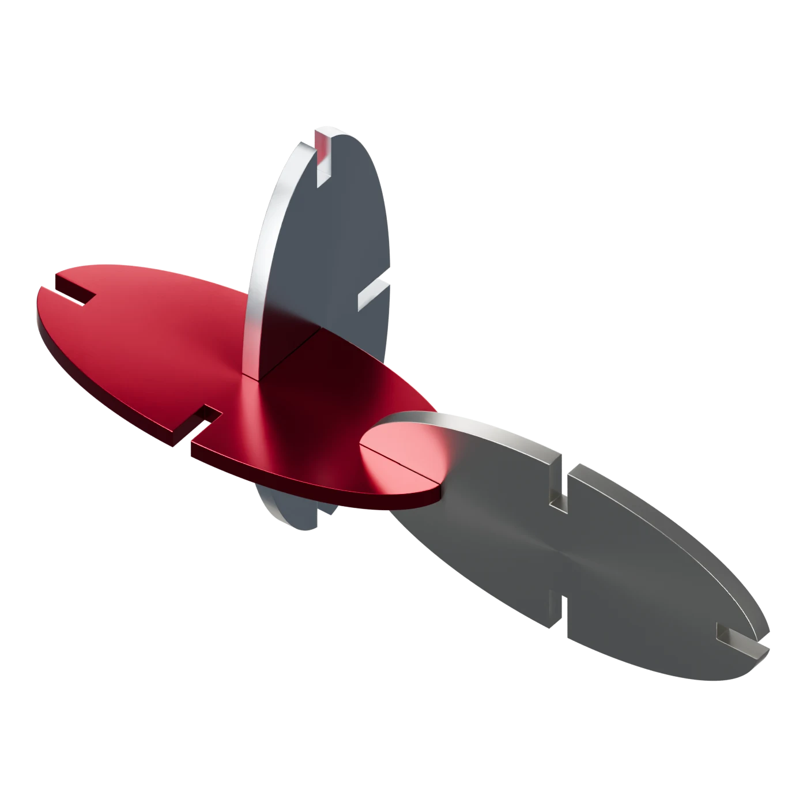
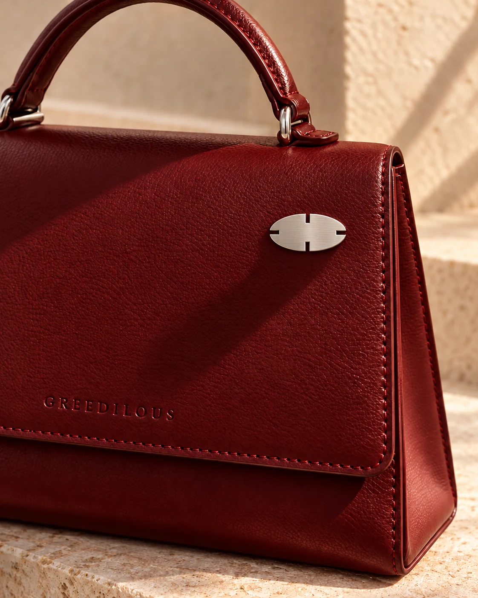
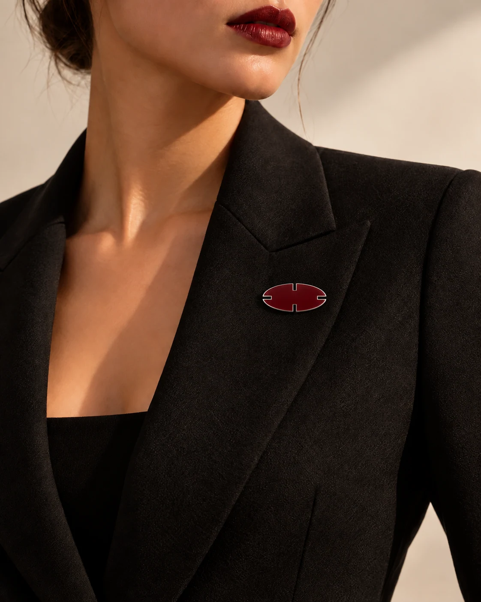
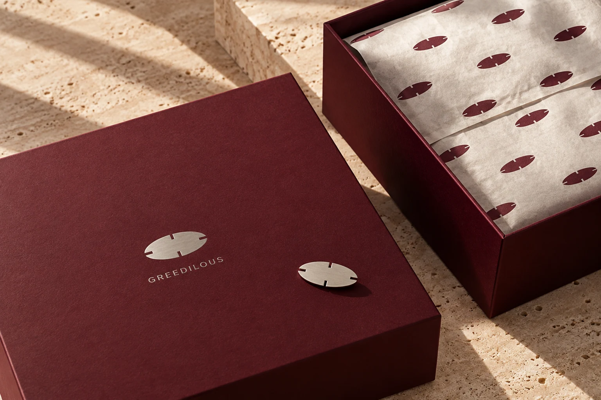
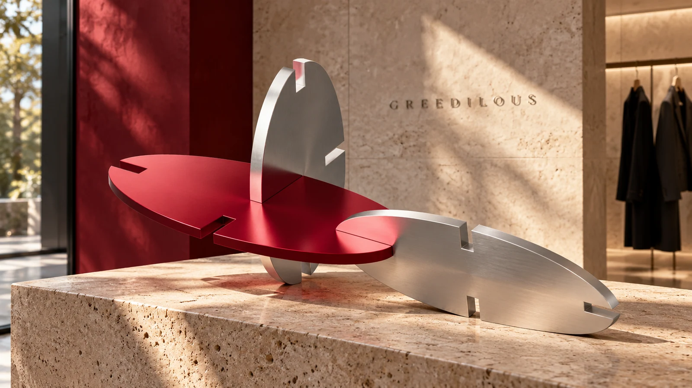

화려함의 정의
화려함을 ‘반복’이라는 언어로 정의하고,
반복의 규칙을 설정해 아이덴티티를 구체화합니다.
BE GREEDILOUS.CONCEPT 02 — OVAL

하나의 형태.
끝없는 연결.
네 방향으로 열린 가능성.
반복될수록, 더 나답게.





화려함을 ‘반복’이라는 언어로 정의하고,
반복의 규칙을 설정해 아이덴티티를 구체화합니다.

네 방향으로 열린 가능성.
반복될수록, 더 나답게.



